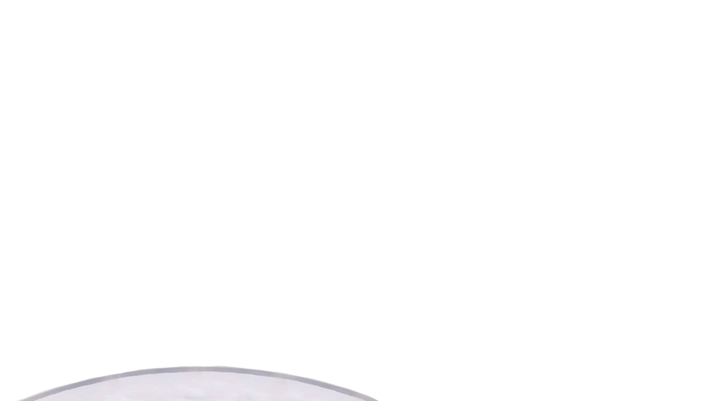

Lars Dembinsky
▼
Webdesigner und -Entwickler
Frontend-Entwickler und Webdesigner für modernes Webdesign, mit starkem Fokus auf Barrierefreiheit und performante Weblösungen, sowie responsive Design.
UX/UI-Design,
Barrierefreiheit,
Responsive Design,
Performante Umsetzung und weiteres...
Zudem beschäftige ich mich viel mit verschiedenen KI Modellen wie ChatGPT, Stable Diffusion, Firefly und weitere Modelle für sinnvolle und professionelle Umsetzung von KI-Inhalten und Überprüfung der Sinnhaftigkeit dieser.
Weitere Schwerpunkte sind weiter unten im Bereich "Schwerpunkte" aufgezählt.

Social Media
Bleiben Sie im Fokus
Social Media ist Ihr Schaufenster zur Welt. Ich entwickle Inhalte, die perfekt zu Ihrem Markenimage passen und Ihre Botschaft authentisch und professionell präsentieren. So bleiben Sie im Gespräch – und vor allem im Kopf Ihrer Zielgruppe.